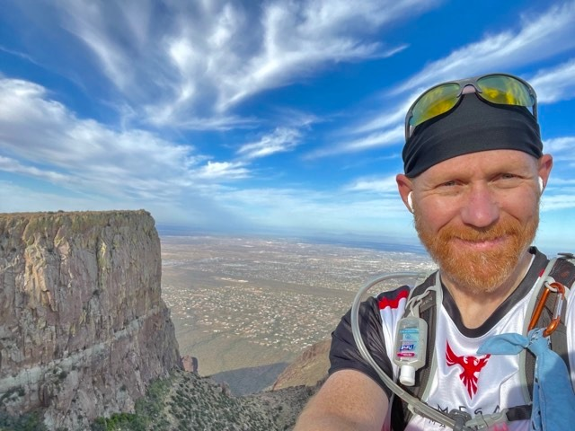
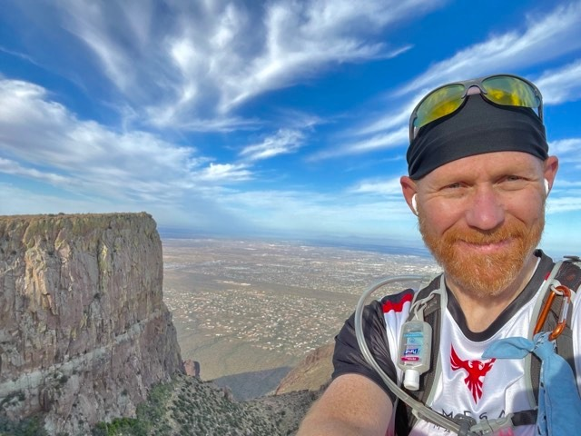

Meet the Photographer
Owner and Creator of AZ Hiking Photos
David D. Garner


 



About David
David grew up in pre-developed Flagstaff, Arizona and there is where his love of the outdoors began to blossom. His family, including six other siblings, spent their play time in the mountains and forests- in fact David has often joked that Mount Elden (located in the Four Peaks Wilderness) was their backyard. However, while his interest in the outdoors started young, it truly began to blossom in his adulthood. After getting married to his beautiful wife, Kristine, and graduating from Brigham Young University with an undergrad in English and then from BYU's law school with a Jurist Doctorate, their family life began.
While David found his professional life fulfilling, he still found his appetite for adventure going unsatisfied. Weekends became reserved for Arizona exploration, and five kids and three grand kids later, David still finds himself hiking to the tops of peaks all over Arizona. Only now, he wants to share the peace and beauty he finds in the brilliant outdoors with those around him. While his original intentions were never to brag about his experiences, it seems that as he shares them people have begun to recognize the unique perspective he brings to the world of nature photography. David hopes to continue sharing his love of nature with those around him and plans on continuing to enjoy the great outdoors for as long as he can!